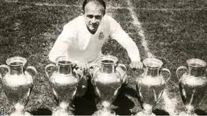
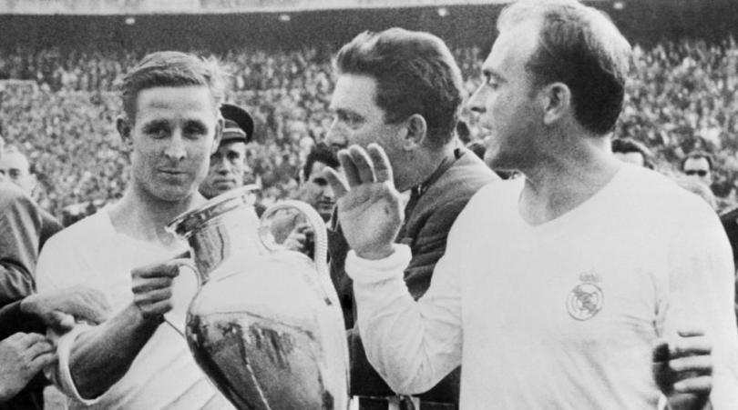

Sebelum 1897, penduduk Madrid tak mengenal sepak bola. Olahraga ini diperkenalkan sejumlah profesor dan pelajar Institución Libre de Enseñanza, yang mendirikan Football Club Sky tahun 1897. Klub terpecah menjadi dua di tahun 1900,yaitu New Foot-Ball de Madrid dan Club Español de Madrid. Dua tahun kemudian Club Español de Madrid terpecah lagi, dan menghasikan pembentukan Madrid Football Club pada "6 Maret 1902". Setelah tiga tahun berdiri, Madrid FC memenangkan gelar pertamanya dengan mengalahkan Athletic Bilbao di final Piala Spanyol. Klub ini pula yang menjadi pendiri Asosiasi Sepakbola Spanyol pada 4 Januari 1909. Saat itu klub dipimpin Adolfo Meléndez.
Tahun 1920, nama klub akhirnya berubah menjadi Real Madrid oleh Raja Alfonso, yang memberi nama Real, atau Royal,hingga di logo Rel Madrid tersemat Mahkota. Sembilan tahun kemudian liga sepakbola Spanyol pertama didirikan. Real Madrid meraih gelar Primera Liga Spanyol pertama tahun 1931, tahun berikut meraihnya lagi, dan menjadi klub pertama yang dua kali berturutan meraih gelar liga. Tahun 1945 Santiago Bernabeu Yeste menjadi presiden. Di masa kepemimpinannya, Stadion Santiago Bernabeu dan Ciudad Deportiva dibangun kembali, setelah rusak pada perang sipil. Tahun 1953, Bernabeu memperkenalkan strategi memboyong pemain berkelas dunia dari luar Spanyol.
Salah satunya, dan yang paling terkenal, adalah Alfredo di Stéfano. Jadilah Real Madrid klub multinasional pertama di dunia. Tahun 1955, Bernabeu bertemu Bedrignan dan Gusztáv Sebes, dan kemudian membentuk turnamen yang kini bernama Liga Champions. Madrid mendominasi Piala Champions (nama sebelum liga champions) dengan meraih trofi itu tahun 1956 sampai 1960,atas prestasi mengkilap itu Real Madrid berhak atas trofi original dan hak mengenakan simbol UEFA sebagai penghargaan. Tahun 1966, Madrid memenangkan Piala Champions kali keenam dengan mengalahkan FK Partizan 2-1 di final.
Real Madrid bisa dibilang merupakan tim yang paling sukses di dunia, berbagai gelar dan raihan jumlah gelar yang diperolehnya mungkin lebih banyak dibandingkan dengan tim-tim lainnya di dunia hingga akhirnya Real Madrid berhak atas gelar klub terbaik abad 20. Madrid merupakan founding member FIFA, pendiri G-14 (organisasi klub-klub terkemuka Eropa yang kini tukar nama menjadi Asosiasi Klub Eropa). Selain sarat akan sejarah, Real Madrid juga terkenal karena kemegahannya dan dihuni oleh pemain-pemain papan atas dunia. History itulah yang benar-benar telah melekat dan menjadikan Real Madrid sebagai klub yang paling glamour di jagad raya ini.
Real Madrid dikenal dengan dua nama sebutan, yakni Los Merengues dan Los Blancos. Namun kedua julukan itu sempat hilang, ketika di tahun 1980-an wartawan Julio César Iglesias mempopulerkan nama La Quinta del Buitre. Namun, di masa kepemimpinan Florentinao Perez (2000-2006), Real Madrid dikenal dengan nama Los Galacticos. Julukan La Quinta del Buitre lenyap bersamaan dengan perginya Butragueno, Michel, dan Martin Vasaquez era 90an. Julukan Los Galacticos mengacu pada pemain-pemain bintang yang diboyong selama rezim Florentino Perez, seperti Luis Figo, Roberto Carlos, Zinedine Zidane, Ronaldo, David Beckham, Raul Gonzales, kaka, benzema,Cristiano Ronaldo dan terakhir Gareth Bale.

 +6285799982916
+6285799982916
 RIZQI ZULFA FAUZY
RIZQI ZULFA FAUZY